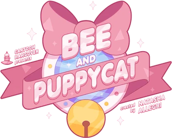

BSIT student
I’m a BSIT student passionate about frontend development, design systems, and creating projects that blend functionality with creativity. My goal is to keep learning and building things that make a difference.
I’m still learning to design and build things that make technology feel a bit more human — from web interfaces to creative digital experiences.
About me / education
I’m a BSIT student passionate about frontend development, design systems, and creating projects that blend functionality with creativity. My goal is to keep learning and building things that make a difference.
Technical focus
I’m putting HTML, CSS, Bootstrap, and JavaScript into practice through responsive webpages, UI styling, and small interactions — from device showcases to a character gallery.
Preview unavailable. Use the project link.
A device showcase exploring the design and features of the Pixel 10 Pro Fold through a responsive layout and product video.
A visual journey into Svalbard’s landscapes and quiet atmosphere, with an image carousel and glimpses of Arctic life.

A small corner of the web for my favorite cartoon show, with character images, quotes, and flip-card interactions.
Whether it’s for collaboration, a project idea, or just to say hi — I’d love to hear from you!
You can email me at:
bobadillaneilyn@gmail.com